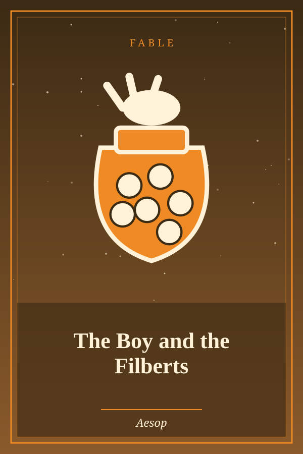

The Boy and the Filberts
Genre: Fable
Synopsis
A boy grabs as many nuts as he can from a pitcher and finds that he cannot pull his hand back out.
Chapter 1: The Boy and the Filberts
A Boy put his hand into a pitcher full of filberts. He grasped as many as he could possibly hold, but when he tried to pull out his hand, he was prevented from doing so by the neck of the pitcher. Unwilling to lose his filberts, and yet unable to withdraw his hand, he burst into tears and bitterly lamented his disappointment. A bystander said to him, “Be satisfied with half the quantity, and you will readily draw out your hand.”
Do not attempt too much at once.